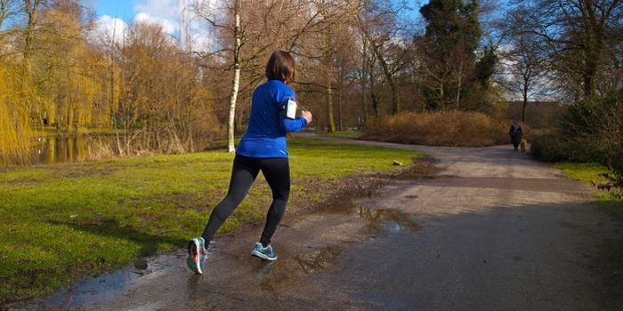
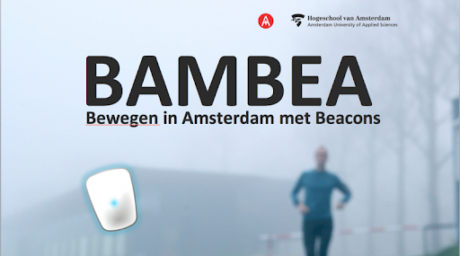
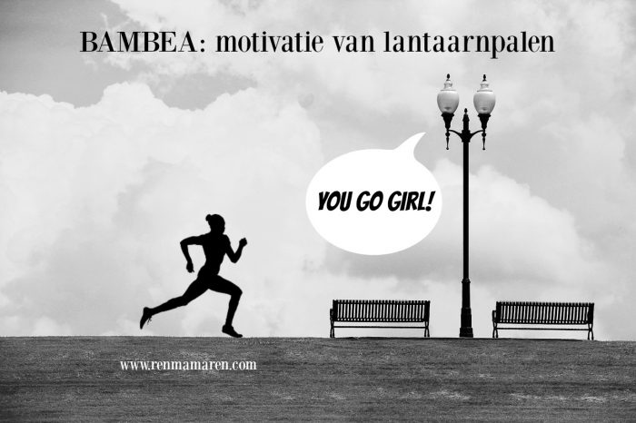

Bewegen tijdens de pauze.
Doelgroep van dit onderzoeksproject zijn de bewoners van Amsterdam-Oost die niet frequent bewegen. Lector Kracht van Sport Marije Baart de la Faille – Deutekom van de Hogeschool van Amsterdam en Inholland leidt het onderzoek. ‘We willen onderzoeken of we juist mensen die niet zo vaak sporten kunnen stimuleren en ondersteunen om de beweegnorm van 30 minuten per dag te halen’, aldus de lector. ‘Ons doel is niet dat mensen ineens fanatiek gaan sporten; het gaat juist om duurzame verandering in hun beweegpatroon; denk aan bijvoorbeeld elke dag een half uurtje in de lunchpauze bewegen in het park.’

Om deze groep aan te spreken is de nieuwe app BAMBEA ontwikkeld, die als enige beweegapp gekoppeld is aan beacons in de openbare ruimte. Via de beacons geeft de app de gebruiker op gerichte momenten feedback. Zo geeft de app aan wanneer je een beweegdoel hebt bereikt, of je vooruit bent gegaan, en wanneer je op een geschikte plek bent om een warming up of strekoefeningen te doen. Het onderzoek naar de technologie wordt uitgevoerd door studenten onder leiding van HvA-onderzoeker Joey van der Bie vanuit het HvA-lectoraat Digital Life van lector Ben Kröse.
De app BAMBEA onderscheidt zich daarnaast van bestaande loopapps, omdat deze als enige beweegapp gebaseerd is op wetenschappelijke theorieën over motivatie en gedragsverandering. Apps zoals Runkeeper en Strava zijn alleen gericht op prestatie. De nieuwe app geeft niet alleen feedback over prestatie, maar ook sociale steun, en het idee dat je het kunt. De app leunt op de theorie dat iemand een aantal fasen doorloopt van inactief gedrag naar bewegingsgedrag. De app BAMBEA analyseert in welke fase de deelnemers zitten. De deelnemers krijgen vervolgens de feedback die bij hun fase aansluit.

Je installeert de BAMBEA app op je smartphone. Die reageert vervolgens op zogenoemde ‘beacons’. Dat zijn kleine zendertjes die met mobiele apparaten communiceren via een bluetooth-verbinding. Ze hangen in lantaarnpalen, in bijvoorbeeld het Oosterpark en het Marinneterrein.
De zendertjes meten via bluetooth je:
• afstand
• duur
• snelheid
De beacons communiceren in dit project alleen met telefoons waarop de app is gedownload. Extra voordeel is dat de app je locatie herkent. Als je bijvoorbeeld langs een bankje loopt kun je daar een bericht krijgen als:
‘Dit is een mooi moment voor een warming-up!’
En de app geeft je dan een video met instructies. Dat is wel heel praktisch en handig vind ik.